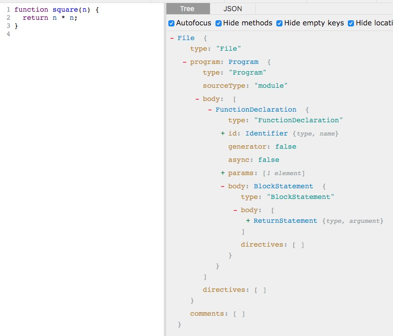

Babel 是 JavaScript 编译器，更确切地说是源码到源码的编译器，通常也叫做“转译器（transpiler）”。意思是说你为 Babel 提供一些 JavaScript 代码，Babel 更改这些代码，然后返回给你新生成的代码。
Babel 处理过程中的每一步都涉及到创建或是操作抽象语法树，亦称 AST。
例如：
function square(n) {
return n * n;
}
会转换成：
{
type: "FunctionDeclaration",
id: {
type: "Identifier",
name: "square"
},
params: [{
type: "Identifier",
name: "n"
}],
body: {
type: "BlockStatement",
body: [{
type: "ReturnStatement",
argument: {
type: "BinaryExpression",
operator: "*",
left: {
type: "Identifier",
name: "n"
},
right: {
type: "Identifier",
name: "n"
}
}
}]
}
}
方便查看和调试 AST 的工具
Babel 的三个主要处理步骤分别是：
Babel 读入源代码，经过词法分析、语法分析后，生成抽象语法树（AST）。
parse(sourceCode) => AST
经过前一阶段的代码分析，Babel 得到了 AST。在原始 AST 的基础上，Babel 通过插件，对其进行修改，比如新增、删除、修改后，得到新的 AST。
transform(AST, BabelPlugins) => newAST
通过前一阶段的转换，Babel 得到了新的 AST，然后就可以逆向操作，生成新的代码。
generate(newAST) => newSourceCode
典型的 Babel 插件结构，如下代码所示：
export default function({ types: babelTypes }) {
return {
visitor: {
Identifier(path, state) {},
ASTNodeTypeHere(path, state) {}
}
}
}
babelType：类似 lodash 那样的工具集，主要用来操作 AST 节点，比如创建、校验、转变等。举例：判断某个节点是不是标识符(identifier)
export default function({ types: babelTypes }) {
return {
visitor: {
Identifier(path, state) {},
ASTNodeTypeHere(path, state) {}
}
}
}
path：AST 中有很多节点，每个节点可能有不同的属性，并且节点之间可能存在关联。path 是个对象，它代表了两个节点之间的关联。你可以在 path 上访问到节点的属性，也可以通过 path 来访问到关联的节点（比如父节点、兄弟节点等）
export default function({ types: babelTypes }) {
return {
visitor: {
Identifier(path, state) {},
ASTNodeTypeHere(path, state) {}
}
}
}
state：代表了插件的状态，你可以通过 state 来访问插件的配置项
visitor：Babel 采取递归的方式访问 AST 的每个节点，之所以叫做 visitor，是因为这里采用了访问者模式
export default function({ types: babelTypes }) {
return {
visitor: {
Identifier(path, state) {},
ASTNodeTypeHere(path, state) {}
}
}
}
Identifier、ASTNodeTypeHere：AST 的每个节点，都有对应的节点类型，比如标识符（Identifier）、函数声明（FunctionDeclaration）等，可以在 visitor 上声明同名的属性，当 Babel 遍历到相应类型的节点，属性对应的方法就会被调用，传入的参数就是 path、state
一个在编译时进行汉字转拼音的插件
const pinyin = require('pinyin');
const sysPath = require('path');
const basePath = sysPath.join(__dirname, '..');
const prefix = sysPath.join('src', 'client', 'router') + sysPath.sep;
module.exports = ({ types: t }) => {
return {
visitor: {
// 遍历所有对象属性
Property(path, state) {
if (
// 判断属性值是否是字符串类型
t.isStringLiteral(path.node.value)
&& path.node.key.name === 'title'
// 判断 AST 父节点是否是对象表达式
&& t.isObjectExpression(path.parentPath)
// 判断父节点的父节点
&& t.isObjectProperty(path.parentPath.parentPath)
&& path.parentPath.parentPath.node.key.name === 'meta'
&& path.parentPath.parentPath.inList) {
// 找是否存在名为 path 的 key
const havePathKey = path.parentPath.parentPath.container.some(
(item) => item.key.name === 'path'
);
if (havePathKey) {
// state.filename 是当前被处理的 js 文件路径
const relative = sysPath.relative(basePath, state.filename);
// 判断是否是 router 目录下的文件
if (relative.indexOf(prefix) !== 0) {
return;
}
const full = pinyin(path.node.value.value, {
style: pinyin.STYLE_NORMAL,
segment: true
});
const short = pinyin(path.node.value.value, {
style: pinyin.STYLE_FIRST_LETTER,
segment: true
});
// 插入 AST 节点
path.insertAfter(t.objectProperty(
// 创建名为 __pinyin__ 的标识符
t.identifier('__pinyin__'),
// 创建对象表达式
t.objectExpression([
t.objectProperty(t.identifier('full'), t.stringLiteral(full.join(' '))),
t.objectProperty(t.identifier('short'), t.stringLiteral(short.join('')))
])
));
}
}
}
}
}
}
谢谢！